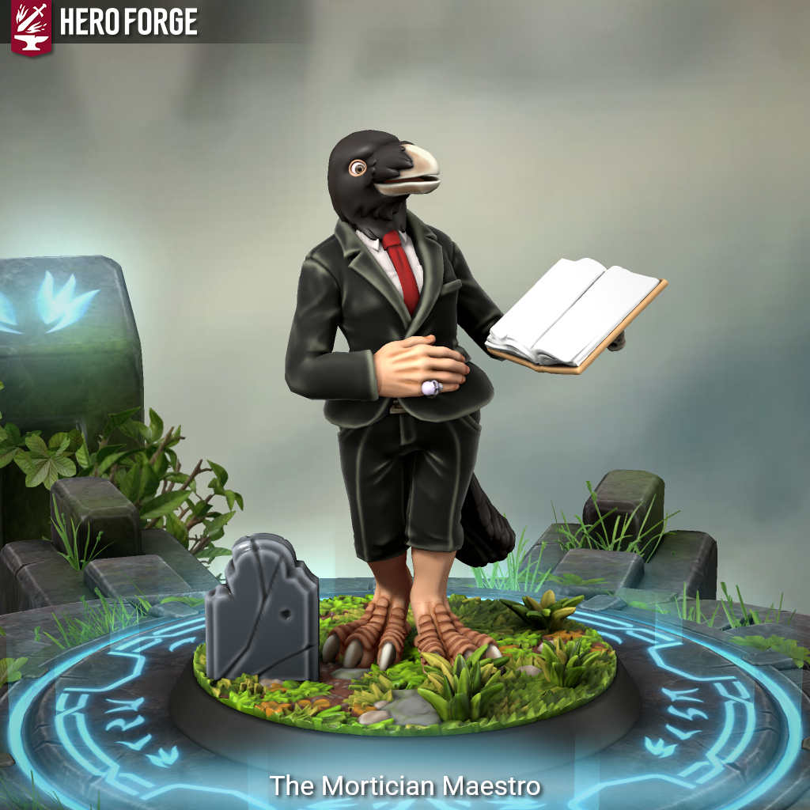

The Mortician Maestro - Is This Anything?

Meet The Mortician Maestro
Race: Kenku
Bardic College: Spirits
The Mortician Maestro performs eulogies and funeral rites, channeling the voices of the dead via his Kenku mimicry. He uses tales from the grave to empower allies or curse enemies. His spellbook is a ledger of obituaries. His “performances” are unspoken, conveyed through unsettling soundscapes and pantomimes.
The Tales from Beyond feature allows him to roll a Bardic Inspiration die and pull a spectral tale to use in combat. Each tale is linked to an entry in the bard’s obituary ledger, a spellbook bound in pressed lilies and ash-treated vellum, wrapped in leather and secured in bone.
Each Tale from Beyond is a story pulled from a collected obituary in the spellbook:
Tale of the Beloved Friend (Temp HP): This is an obituary belonging to Mira the Seamstress, who died shielding her grandchild from a collapsing building.
Tale of the Avenger (Bonus Weapon Attack): From the obituary of Balik Thornblade, executed for revenge killings against corrupt magistrates.
With a DM’s permission, the Maestro interacts with corpses after battle to gain new tales for the ledger.